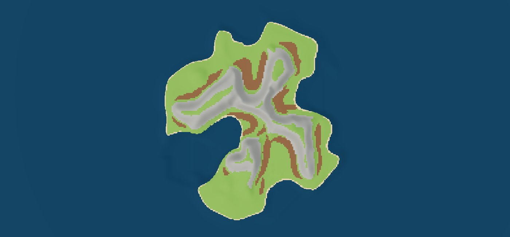
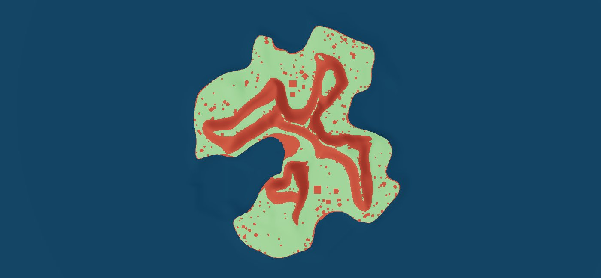
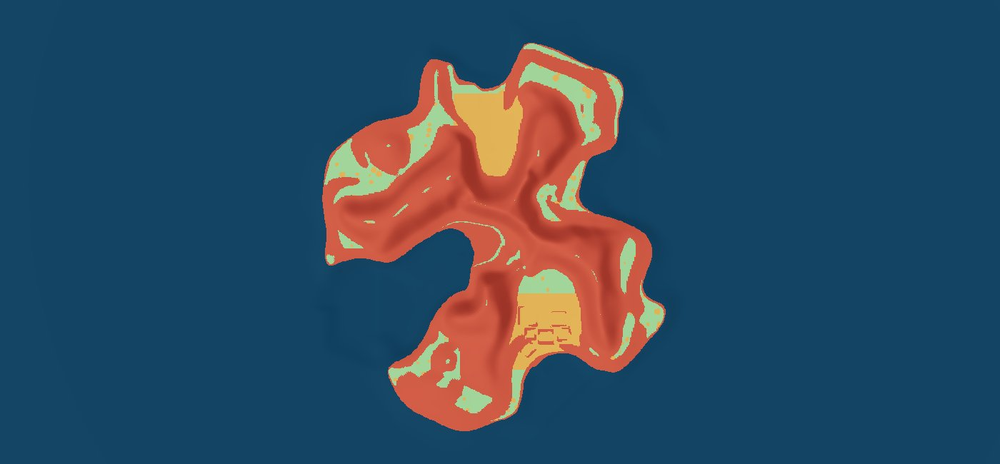
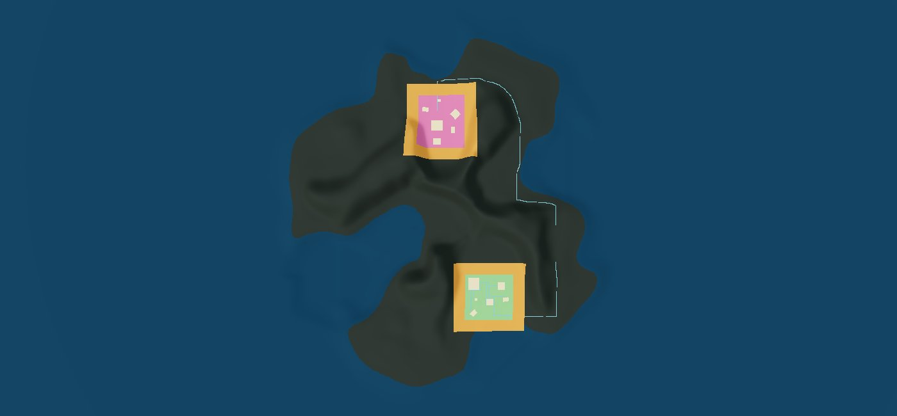
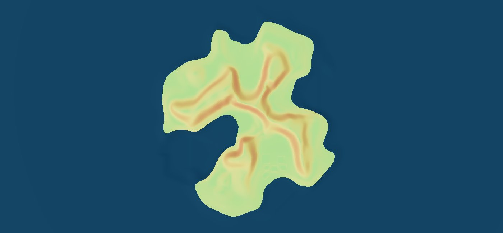
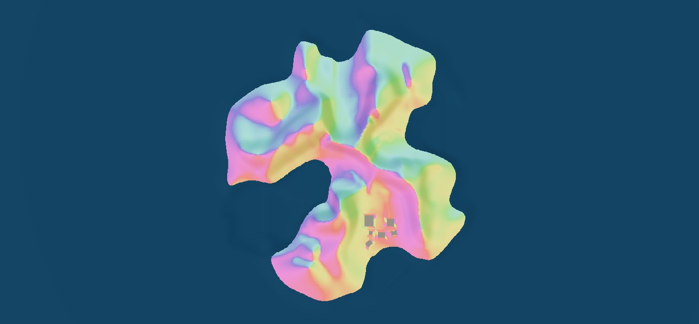
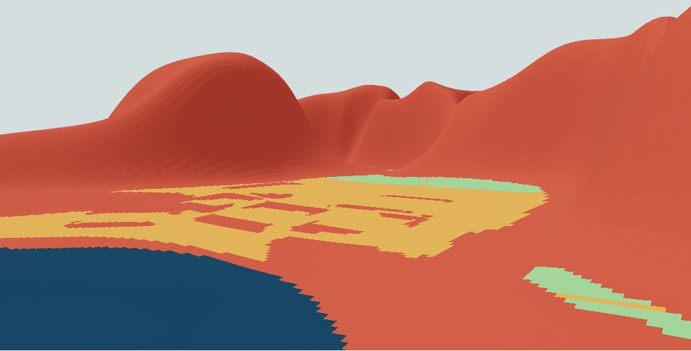

One canonical world: existing 1 m navigation, exact terrain triangles and #135 zoning. No extra saved terrain fields. Seed 18, undecorated diagnostics. Ground materials are unchanged; their repetition is addressed separately in #137.

Ground membership from #135. Exact physical water takes precedence in this diagnostic view.

Existing resident traversability: green available, red blocked, blue sea.

Point preflight: green unreserved, amber reserved or occupied, red unsuitable, blue sea.

Existing reservations: player green, rival pink, buffers amber, foundations pale and routes cyan.

Exact triangle slope: green 0° through red 90°.

Exact downhill aspect: hue follows degrees clockwise from north; flat ground is grey.

Tablet-sized player starting view, building-point overlay. This is browser emulation, not physical iPad validation.